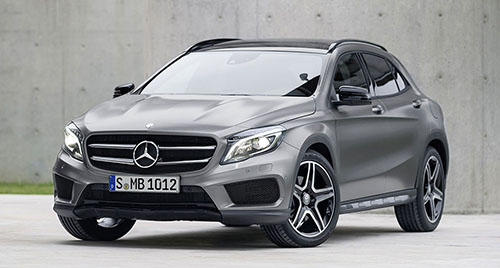
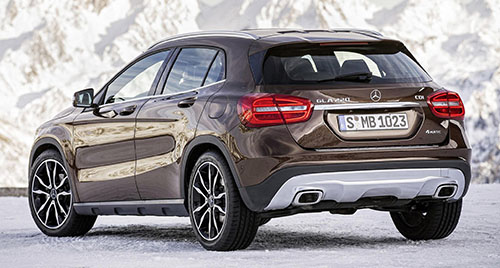
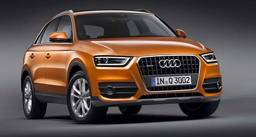
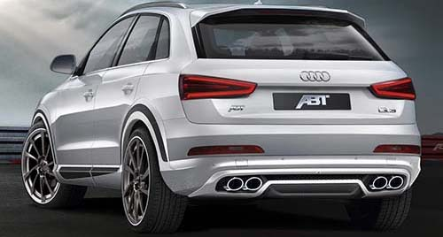
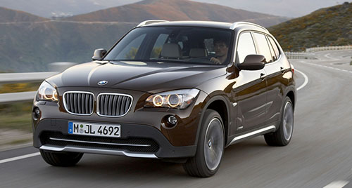
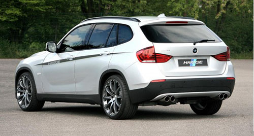

El reciente lanzamiento del Mercedes GLA, con una estética similar a la de los exitosos Clase A y alejada de las proporciones habituales de un SUV pero con un posicionamiento como tal, han revolucionado el segmento de los SUV compactos premium donde el Range Rover Evoque era, hasta hora, el modelo faro y donde coches como el BMW X1 y el Audi Q3 apostaban por un enfoque más funcional y familiar que el del Range Rover, abiertamente orientado al diseño.
Para ver si el GLA, que probamos ya hace unos meses, era capaz de poner en aprietos a sus rivales, decidimos enfrentarlos en un comparativo donde los probamos tanto en asfalto como en tierra. Además, y aunque sabemos que las versiones 4x2 se llevan la mayoría de ventas, no resistimos la tentación de elegir versiones con tracción integral y motores diésel en una horquilla entre los 170 y los 190 CV.
El Mercedes GLA es un SUV premium que se puso a la venta en marzo de 2014. No te voy a aburrir con mil datos, sino que me voy a centrar en las sensaciones que me ha transmitido.
Para empezar, su diseño y concepto. El nuevo GLA es un coche de tamaño compacto y que no da la impresión de tener una carrocería muy elevada, es decir, que no parece un SUV convencional. De hecho, me pregunto si un usuario de la calle sería capaz de diferenciarlo del Mercedes Clase A en el que está basado. Su aspecto es más robusto y musculoso, pero no precisamente campero. Según los responsables de tendencias de la marca de Stuttgart los demandados todocamino van a ir adaptándose a este diseño, sobre todo, teniendo en cuenta que así se logra una figura más aerodinámica y, sobre todo, más eficiente.
De hecho, el Mercedes GLA es el mejor de su categoría en el indice CX: 0,29, lo que supone que la versión diésel de acceso a la gama consuma solo 4,3 l/100 km.
Una vez al volante del GLA veo que la posición de conducción es cómoda y muy similar a la que tienes en un Clase A. Eso es bueno si estás acostumbrado a conducir turismos urbanos o compactos, pero si esperas una postura más elevada que te de una mejor visión de la carretera y, por tanto, más sensación de seguridad y control, puede que sientas que le falta algo. Por lo demás, el interior es casi idéntico al del modelo del que parte y con él comparte instrumentación y sistema de entretenimiento: de hecho, el 70% proviene del compacto de Mercedes.
 Más info en la web del fabricante
Lleva en el mercado desde 2012, pero el Audi Q3 2.0 TDI 177 CV se mantiene muy actual. Al menos, así me lo parece gracias a un diseño bastante más moderno que el ¿nuevo? Audi Q5. Desde su lanzamiento, mucha gente me ha preguntado cuál de los dos interesa más y yo lo tengo muy claro: menos es más. Me quedo con un Audi Q3 que apenas pierde espacio en las plazas traseras, ofrece un generoso maletero de 460 litros, resulta más manejable, luce mucho más actual y, encima, es 7.000 euros más barato. Ahora voy con otras dos comparaciones para justificar el titular de la prueba: gama Q3 y rivales.
Comparado con el resto de sus hermanos, este Audi Q3 2.0 TDI 177 CV es el TDI más potente y, con 177 caballos, tienes la potencia justa para vacilar en las arrancadas y superar pendientes en autovía sin ver cómo el cuentavueltas va cayendo al mismo ritmo que la fuerza. Esa sensación aparece en el TDI 140 y, por ello, el gasto extra que implica disfrutar de este 2.0 con 177 CV merece la pena. Sobre todo, porque el consumo real apenas sube 0,4 litros... siempre que no lleves la tracción quattro. Aquí el debate está servido porque habrá gente que nunca se salga de lo negro. Pero Audi no te da opción y, si quieres este motor, tienes que coger la tracción integral. Es obvio que siempre es un plus de seguridad y que nunca sabes cuando te puede sacar un apuro, eso sí.
Durante esta prueba del Audi Q3 2.0 TDI 177 CV, completé un recorrido offroad con pistas embarradas y su funcionamiento es magnífico. Mejora el agarre, apenas provoca subviraje y aporta diversión sin gran exigencia al conductor, pero te recomiendo que no pases de ahí. Ante desniveles más pronunciados, la baja altura libre al suelo que ofrece (menos de 13 centímetros) complicará las cosas y un ángulo de ataque muy modesto resulta escaso para aventurarse por el campo. Mejor volver al asfalto y disfrutar del equilibrio entre confort de marcha y comportamiento. Frente al BMW X1 quizás sea un punto menos deportivo, pero es mucho más confortable.
 Más info en la web del fabricante
Llega el Salón de Nueva York 2012 y con él otra pequeña avalancha de novedades automovilísticas. Entre ellas estará el nuevo BMW X1, que estrenará un ligero restyling para intentar continuar pegando fuerte en el mercado. También en el mercado norteamericano, de ahí que su presentación se haga estos días en Nueva York. Los cambios no serán en absoluto profundos, y de hecho exteriormente hay que fijarse bastante para darse cuenta de ellos.
Entre las novedades, el BMW X1 2013 estrena un nuevo paragolpes delantero, incluyendo una parrilla frontal con el clásico diseño de BMW ligeramente más grande, así como unas ópticas ligeramente rediseñadas. Nos falta conocer su parte trasera, pero es probable que paragolpes y ópticas posteriores también estrenen pequeñas modificaciones. En cualquier caso, estéticamente los cambios no son demasiado evidentes y no romperán con la línea básica de diseño que estrenó el BMW X1 en su lanzamiento, allá por el año 2009.
En cuanto a su interior, los cambios también son de matiz, así que no esperemos revoluciones tampoco en este aspecto. Para ello habrá que esperar a la siguiente generación del X1, dentro de unos años. Mecánicamente, se espera que en Estados Unidos la oferta mecánica comprenda el 2.0 TwinPower Turbo de gasolina, con 245 CV, o el 3.0 TwinPower Turbo de seis cilindros y 306 CV, aunque obviamente en Europa veremos también las habituales motorizaciones diésel, mejoradas en prestaciones y consumos.
Por el momento no hay muchos más datos, pero en breve se presentará oficialmente y conoceremos todas las novedades que traerá el nuevo BMW X1. El modelo llegará a los concesionarios estadounidenses durante el verano, y es de esperar que, más tarde o más temprano, Europa también termine recibiendo este pequeño restyling del SUV compacto bávaro.
 